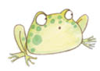
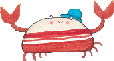
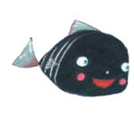
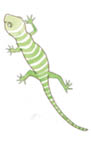

Küçük Kara Balık gülümsemiş, bu kurbağacıkların anneleri nasıl biri diye merak etmiş.
“Anneniz nerede?” diye sormuş.
Tam o anda güçlü bir vraklama sesiyle yerinden sıçramış. Başını kaldırıp bakınca bir kayaya tünemiş olan kocaman bir kurbağa görmüş. Kurbağa gölün içine atlamış ve Küçük Kara Balık’a doğru yüzmüş.

“Merhaba,” demiş. “İşte geldim, ne istiyorsun bakalım?”
Kurbağacıklar bir ağızdan bağırmışlar:
“Merhaba büyükanne!”
Kurbağa,
“Seni baş belası,” demiş Küçük Kara Balık’a, ”benim yavrularımın kafasına ne saçmalıklar sokuyorsun? Seni gösterişçi zıpçıktı, seni! Dünyanın neresi olduğunu bilecek kadar çok yaşadım ben. Dünya işte burada, bu gölde. Torunlarımın kafasına saçma sapan şeyler doldurmayı bırakıp buradan gitsen iyi olur!”
“Yüz yaşına bile gelsen,” diye yanıtlamış onu Küçük Kara Balık, “yine de zavallı, budala, yaşlı bir kurbağadan başka bir şey olmayacaksın sen!”
Bunu söyler söylemez de kaçıp kendini kurtarmış, çünkü yaşlı kurbağa öfkeyle peşinden geliyormuş.
Dere yatağı kıvrıla kıvrıla, dimdik inmeye başlamış. Derenin akışı da hızlanmış, dağın tepesinden bakan biri, onu döne döne uzayan beyaz bir şerit sanabilirmiş. Küçük Kara Balık, dağın tepesinden yuvarlanıp derenin ortasına düşmüş olan bir kaya parçasına varmış, kaya parçası dereyi ikiye bölüyormuş. Kaya parçasının üstünde, el büyüklüğünde bir kertenkele oturmuş, sabah güneşinde ısınıyormuş. Biraz ötede de kocaman, tombul bir yengeç derenin sığ kumsalına çöreklenmiş, az önce yakaladığı bir kurbağayı midesine indiriyormuş. Küçük Kara Balık, yengeci görünce müthiş korkmuş, ama yine de saygılı bir sesle selamlamış onu.

Yengeç ona yan yan bakmış,
“Ne kadar da kibar bir balıkçık,” demiş. “Gel yanıma canım, gel yanıma.”

Küçük Kara Balık ise,
“Ben dünyayı görmek istiyorum, senin beni yakalamanı istemiyorum,” demiş ve yengece hiç yaklaşmamış.
Yengeç, onu kandırmaya çalışarak dil dökmüş: “Neden böyle ürkek ve huzursuzsun, yavrum?” diye sormuş.
“Ne ürkeğim, ne de huzursuz,” demiş Küçük Kara Balık, “ne görüyorsam, ne duyuyorsam onu söylüyorum.”
“Peki öyleyse,” demiş yengeç, “söyle bakalım: Gözlerinle kulakların benim seni yakalamayı tasarladığımı mı anlatıyorlar?”
“Numara yapma,” demiş Küçük Kara Balık, küçümseyen bakışlarla, “kafandan neler geçtiğini biliyorum ben.”
“Saçmalama,” diye ısrar etmiş yengeç, “kurbağadan başka bir şey avlamadığımı görüyorsun işte; çünkü ben onlardan nefret ederim. Dünyadaki en önemli yaratıklar olduklarını düşünürler onlar; dünyanın kimin pençeleri arasında olduğunu göstermek istiyorum onlara! Gel yanıma yavrum, gel hadi, korkmana hiç neden yok!”
Yengeç bunu söylerken Küçük Kara Balık’a doğru tuhaf bir biçimde yan yan yürüyüp yaklaşmaya çalışıyormuş.
Küçük Kara Balık kendisini tutamayıp kahkahayı patlatmış. “Zavallı,” demiş, “Sen daha doğru dürüst yürümesini bile bilmiyorsun! Dünyayı kimin elinde tuttuğunu nereden bileceksin?”

Yengece hiç yaklaşmamış Küçük Kara Balık. Ansızın derenin yüzeyine bir gölge düşmüş, arkasından da büyük bir şapırtı duyulmuş; bunun üzerine yengeç kumun üzerinde yuvarlana yuvarlana kaçmaya başlamış. Kertenkele bunu görünce öyle bir gülmüş ki, az daha üzerinde oturduğu kayadan suya yuvarlanıyormuş.
Küçük Kara Balık, kıyıda duran bir oğlan çocuğunun kendisini ve yengeci seyrettiğini görmüş. Az sonra derenin kıyısında bir koyun ve keçi sürüsü belirmiş, hayvanlar burunlarını dereye sokup su içmişler. Küçük Kara Balık hiç kıpırdamadan onların su içmesini beklemiş, sonra da kertenkeleye seslenmiş:
“Beni bağışlayın sayın kertenkele, derenin bitiminde ne olduğunu bulmak için yollardayım. Siz akıllı bir yaratığa benziyorsunuz, ben de size bir şey sormak istiyorum.”
“Bilmek istediğin nedir?” diye sormuş kertenkele, tatlı bir sesle.
“Ben evden ayrılırken,” demiş Küçük Kara Balık, “pelikanların, testerebalıklarının, balıkçılların tehlikesine karşı uyardılar beni. Bunlar hakkında bir bildiğiniz varsa bana anlatmanızı istiyorum.”